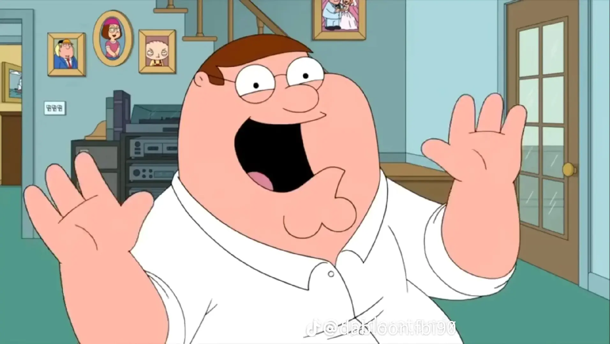

My time at Kennesaw State University has been decent. As of now it peaked in freshman year because me and my friends were very close and hung out all the time, but that has seemed to dissipate over time since we are all more busy. I usually struggle to make friends, but I have made some besides my normal group of friends that I had when I first started college which is great for me.
My grades have been good at KSU so far. I've dropped 3 classes so for which is 3 more than I would want it to be but I don't plan to drop anymore. I also changed my major but I think it'll be good for me in the long run.

Thank you for viewing my page. If you want to learn more about me please check out the about page. If you want to contact me please check the contact page.